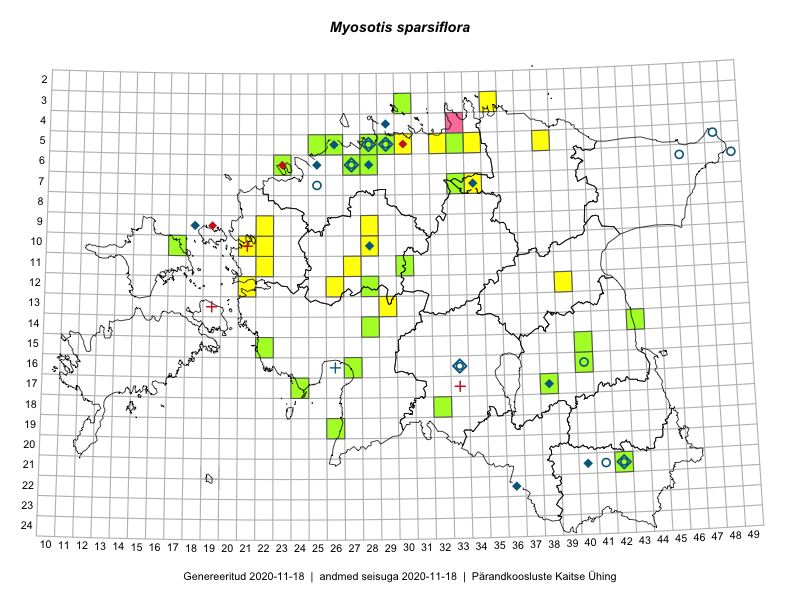

Myosotis sparsiflora — harvaõiene lõosilm
Boraginaceae :: Myosotis sparsiflora J.G.Mikan ex Pohl (118)

Kaart põhineb 119 kirjel:
vaatlusi 56
herbaareksemplare 62
PKÜ kirjeid1 1
Taime kaasaegsed ja ajaloolised leiukohad asuvad 50 ruudus.
Tingmärgid ja ruutude arvud periooditi (U2 / V3 )
█ 2006–2020 (39/–)
◆/◇ 1971–2005 (10/15)
○ 1921–1970 (10/4)
+ kuni 1920 (0/4)
× hävinud (–/0)
? kaheldav (–/0)
| Ruut | Leidja(d) | Leiuaeg | Kirje |
|---|---|---|---|
| 12-21 | 2008-07-01–2008-07-01T09:00Z | ruut/ala: Myosotis sparsiflora J.G.Mikan ex Pohl | |
| 07-34 | Ülle Kukk | 1999-06-20–1999-06-21 | ruut/ala: Myosotis sparsiflora J.G.Mikan ex Pohl |
| 04-29 | Heinrich Aasamaa | 1988 | ruut/ala: Myosotis sparsiflora J.G.Mikan ex Pohl |
| 09-18 | Liivia Laasimer | 1975 | ruut/ala: Myosotis sparsiflora J.G.Mikan ex Pohl |
| 16-33 | botaaniline ekspeditsioon ZBI | 1983-06-20 | ruut/ala: Myosotis sparsiflora J.G.Mikan ex Pohl |
| 16-33 | 1957–1983 | ruut/ala: Myosotis sparsiflora J.G.Mikan ex Pohl | |
| 05-28 | H. Salasoo, J. Rebane | 1934–1938 | ruut/ala: Myosotis sparsiflora J.G.Mikan ex Pohl |
| 12-28 | Tiit Hallikma, Toomas Kukk, Indrek Tammekänd | 2015-06-09 | ruut/ala: Myosotis sparsiflora J.G.Mikan ex Pohl |
| 05-32 | Rein Kalamees | 2015-06-08 | ruut/ala: Myosotis sparsiflora J.G.Mikan ex Pohl |
| 10-17 | Toomas Kukk, Eerik Leibak | 2015-08-12 | ruut/ala: Myosotis sparsiflora J.G.Mikan ex Pohl |
| 12-28 | Toomas Kukk, Indrek Tammekänd, Tiit Hallikma | 2015-06-09 | ruut/ala: Myosotis sparsiflora J.G.Mikan ex Pohl |
| 03-35 | Rein Kalamees, Kersti Püssa | 2015-05-31 | ruut/ala: Myosotis sparsiflora J.G.Mikan ex Pohl |
| 05-33 | Rein Kalamees, Kersti Püssa | 2015-06-02 | ruut/ala: Myosotis sparsiflora J.G.Mikan ex Pohl |
| 14-28 | Ott Luuk, Hannes Pehlak | 2015-06-10 | ruut/ala: Myosotis sparsiflora J.G.Mikan ex Pohl |
| 07-33 | Jana-Maria Habicht, Ester Valdvee | 2015-05-29 | ruut/ala: Myosotis sparsiflora J.G.Mikan ex Pohl |
| 07-34 | Kai Rünk, Ülle Jõgar, Illi Tarmu | 2015-05-22 | ruut/ala: Myosotis sparsiflora J.G.Mikan ex Pohl |
| 18-32 | Maria Abakumova, Helle Mäemets | 2015-05-23 | ruut/ala: Myosotis sparsiflora J.G.Mikan ex Pohl |
| 07-34 | Kai Rünk, Ülle Jõgar, Illi Tarmu | 2015-03-23 | ruut/ala: Myosotis sparsiflora J.G.Mikan ex Pohl |
| 09-28 | Aat Sarv | 2015-05-02–2015-05-07 | ruut/ala: Myosotis sparsiflora J.G.Mikan ex Pohl |
| 03-30 | Mari Reitalu, Tõnu Ploompuu, Ott Luuk, Peedu Saar | 2014-06-01 | ruut/ala: Myosotis sparsiflora J.G.Mikan ex Pohl |
| 17-38 | Toomas Kukk, Sulev Savisaar, Urmas Laansoo, Ott Luuk, Ülle Reier, Kersti Tambets | 2016-05-11 | ruut/ala: Myosotis sparsiflora J.G.Mikan ex Pohl |
| 17-38 | Toomas Kukk, Sulev Savisaar, Urmas Laansoo, Ott Luuk, Ülle Reier, Kersti Tambets | 2016-05-11 | ruut/ala: Myosotis sparsiflora J.G.Mikan ex Pohl |
| 10-22 | Tõnu Ploompuu | 2015-08-21 | ruut/ala: Myosotis sparsiflora J.G.Mikan ex Pohl |
| 12-26 | Tõnu Ploompuu | 2015-06-23 | ruut/ala: Myosotis sparsiflora J.G.Mikan ex Pohl |
| 15-22 | Toomas Kukk, Peedu Saar | 2016-05-14 | ruut/ala: Myosotis sparsiflora J.G.Mikan ex Pohl |
| 05-29 | Peedu Saar | 2016-05-24 | ruut/ala: Myosotis sparsiflora J.G.Mikan ex Pohl |
| 05-29 | Peedu Saar | 2016-05-24 | ruut/ala: Myosotis sparsiflora J.G.Mikan ex Pohl |
| 06-28 | Tõnu Ploompuu | 2015-06-06 | ruut/ala: Myosotis sparsiflora J.G.Mikan ex Pohl |
| 09-22 | Sirje Lagle, Tõnu Ploompuu | 2015-05-15 | ruut/ala: Myosotis sparsiflora J.G.Mikan ex Pohl |
| 06-28 | Toomas Kukk | 2016-06-02 | ruut/ala: Myosotis sparsiflora J.G.Mikan ex Pohl |
| 05-28 | Peedu Saar | 2016-06-01 | ruut/ala: Myosotis sparsiflora J.G.Mikan ex Pohl |
| 05-28 | Peedu Saar | 2016-06-01 | ruut/ala: Myosotis sparsiflora J.G.Mikan ex Pohl |
| 10-21 | Tõnu Ploompuu | 2015-05-02 | ruut/ala: Myosotis sparsiflora J.G.Mikan ex Pohl |
| 11-22 | Tõnu Ploompuu | 2015-06-03 | ruut/ala: Myosotis sparsiflora J.G.Mikan ex Pohl |
| 11-27 | Andrus Jair, Tõnu Ploompuu | 2015-05-17 | ruut/ala: Myosotis sparsiflora J.G.Mikan ex Pohl |
| 05-38 | Thea Kull, Toomas Kukk | 2016-09-05 | ruut/ala: Myosotis sparsiflora J.G.Mikan ex Pohl |
| 05-38 | Thea Kull, Toomas Kukk | 2016-09-05 | ruut/ala: Myosotis sparsiflora J.G.Mikan ex Pohl |
| 16-40 | Peedu Saar | 2016-05-22 | ruut/ala: Myosotis sparsiflora J.G.Mikan ex Pohl |
| 16-40 | Peedu Saar | 2016-05-22 | ruut/ala: Myosotis sparsiflora J.G.Mikan ex Pohl |
| 05-29 | Kadi-Liis Kesler, Tiina Elvisto | 2015-05-12–2015-05-29 | ruut/ala: Myosotis sparsiflora J.G.Mikan ex Pohl |
| 05-26 | Kadi-Liis Kesler | 2015-05-31 | ruut/ala: Myosotis sparsiflora J.G.Mikan ex Pohl |
| 05-29 | Kadi-Liis Kesler, Tiina Elvisto | 2015-05-12 | ruut/ala: Myosotis sparsiflora J.G.Mikan ex Pohl |
| 06-28 | Tõnu Ploompuu | 2015-06-06 | ruut/ala: Myosotis sparsiflora J.G.Mikan ex Pohl |
| 09-22 | Tõnu Ploompuu, Sirje Lagle | 2015-05-15 | ruut/ala: Myosotis sparsiflora J.G.Mikan ex Pohl |
| 10-21 | Tõnu Ploompuu | 2015-05-02 | ruut/ala: Myosotis sparsiflora J.G.Mikan ex Pohl |
| 10-22 | Tõnu Ploompuu | 2015-06-03 | ruut/ala: Myosotis sparsiflora J.G.Mikan ex Pohl |
| 11-22 | Tõnu Ploompuu | 2015-06-03 | ruut/ala: Myosotis sparsiflora J.G.Mikan ex Pohl |
| 11-27 | Andrus Jair, Tõnu Ploompuu | 2015-05-17 | ruut/ala: Myosotis sparsiflora J.G.Mikan ex Pohl |
| 11-27 | Andrus Jair, Tõnu Ploompuu | 2015-05-17 | ruut/ala: Myosotis sparsiflora J.G.Mikan ex Pohl |
| 05-26 | Kadi-Liis Kesler | 2015-05-31 | ruut/ala: Myosotis sparsiflora J.G.Mikan ex Pohl |
| 14-43 | Ott Luuk, Peedu Saar | 2017-05-18 | ruut/ala: Myosotis sparsiflora J.G.Mikan ex Pohl |
| 16-40 | Peedu Saar | 2017-05-24 | ruut/ala: Myosotis sparsiflora J.G.Mikan ex Pohl |
| 16-40 | Peedu Saar | 2017-05-24 | ruut/ala: Myosotis sparsiflora J.G.Mikan ex Pohl |
| 13-29 | Toomas Kukk, Tiit Hallikma | 2018-08-10 | ruut/ala: Myosotis sparsiflora J.G.Mikan ex Pohl |
| 05-30 | Tõnu Ploompuu | 2007 | ruut/ala: Myosotis sparsiflora J.G.Mikan ex Pohl |
| 12-39 | Ott Luuk, Sten Mander, Kersti Tambets, Toomas Kukk | 2019-05-28 | ruut/ala: Myosotis sparsiflora J.G.Mikan ex Pohl |
| 21-40 | L. Pihlapuu | 1975-07-09 | TU255285: Myosotis sparsiflora J.G.Mikan ex Pohl |
| 21-40 | L. Pihlapuu | 1975-07-09 | TU259000: Myosotis sparsiflora J.G.Mikan ex Pohl |
| 21-40 | L. Pihlapuu | 1975-07-09 | TU259007: Myosotis sparsiflora J.G.Mikan ex Pohl |
| 21-40 | L. Pihlapuu | 1975-07-09 | TU259008: Myosotis sparsiflora J.G.Mikan ex Pohl |
| 21-40 | L. Pihlapuu | 1975-07-09 | TU259009: Myosotis sparsiflora J.G.Mikan ex Pohl |
| 06-49 | A. Remmel | 1958-08-22 | TU259011: Myosotis sparsiflora J.G.Mikan ex Pohl |
| 21-40 | Linda Viljasoo | 1972-05-28 | TAA0026353: Myosotis sparsiflora J.G.Mikan ex Pohl |
| 17-38 | Rein Sander | 1974-06-05 | TAA0026354: Myosotis sparsiflora J.G.Mikan ex Pohl |
| 16-33 | Vilma Kuusk | 1983-06-16 | TAA0026355: Myosotis sparsiflora J.G.Mikan ex Pohl |
| 05-48 | Vilma Kuusk | 1969-06-22 | TAA0026356: Myosotis sparsiflora J.G.Mikan ex Pohl |
| 05-29 | Toomas Kukk | 1997-06-15 | TAA0026357: Myosotis sparsiflora J.G.Mikan ex Pohl |
| 05-29 | Toomas Kukk | 1997-06-15 | TAA0026358: Myosotis sparsiflora J.G.Mikan ex Pohl |
| 07-25 | Haide-Ene Rebassoo | 1957-05-31 | TAA0026359: Myosotis sparsiflora J.G.Mikan ex Pohl |
| 16-40 | Agnes Ojaveer | 1965-05-28 | TAA0026361: Myosotis sparsiflora J.G.Mikan ex Pohl |
| 06-27 | Linda Viljasoo | 1969-05 | TAA0026362: Myosotis sparsiflora J.G.Mikan ex Pohl |
| 05-29 | Leida Karu | 1958-06-13 | TAA0026363: Myosotis sparsiflora J.G.Mikan ex Pohl |
| 05-29 | Ellen Muru | 1958-06-13 | TAA0026364: Myosotis sparsiflora J.G.Mikan ex Pohl |
| 05-28 | Tõnu Ploompuu | 1989-05 | TAA0026365: Myosotis sparsiflora J.G.Mikan ex Pohl |
| 07-25 | Haide-Ene Rebassoo | 1963-06-26 | TAA0026366: Myosotis sparsiflora J.G.Mikan ex Pohl |
| 21-41 | Linda Viljasoo | 1957-06-15 | TAA0026368: Myosotis sparsiflora J.G.Mikan ex Pohl |
| 21-42 | Linda Viljasoo | 1957-06-15 | TAA0026369: Myosotis sparsiflora J.G.Mikan ex Pohl |
| 05-28 | Gustav Vilbaste | 1931-05-31 | TAA0026371: Myosotis sparsiflora J.G.Mikan ex Pohl |
| 05-28 | Linda Viljasoo | 1978-05-27 | TAA0026373: Myosotis sparsiflora J.G.Mikan ex Pohl |
| 10-28 | Heinrich Aasamaa | 1971-06-28 | TAM0055235: Myosotis sparsiflora J.G.Mikan ex Pohl |
| 05-28 | Gustav Vilbaste | 1947-07-21 | TAM0003244: Myosotis sparsiflora J.G.Mikan ex Pohl |
| 22-36 | Tõnu Ploompuu | 1990-07-11 | TALL C006162: Myosotis sparsiflora J.G.Mikan ex Pohl |
| 15-40 | Toomas Kukk | 2009-07-22 | TAA0077687: Myosotis sparsiflora J.G.Mikan ex Pohl |
| 15-40 | Toomas Toom | 2009-07-22 | TAA0077688: Myosotis sparsiflora J.G.Mikan ex Pohl |
| 21-42 | Vivika Meltsov | 2007-05-19 | TAA0077689: Myosotis sparsiflora J.G.Mikan ex Pohl |
| 16-40 | Vivika Meltsov, Kaili Kattai | 2007-05-22 | TAA0077690: Myosotis sparsiflora J.G.Mikan ex Pohl |
| 07-33 | Jana-Maria Habicht | 2015-05-29 | TAM0116553: Myosotis sparsiflora J.G.Mikan ex Pohl |
| 16-27 | Vilma Kuusk | 2007-05-28 | TAA0114377: Myosotis sparsiflora J.G.Mikan ex Pohl |
| 16-27 | Vilma Kuusk | 2007-05-28 | TAA0114378: Myosotis sparsiflora J.G.Mikan ex Pohl |
| 03-30 | Ott Luuk | 2014-06-01 | TAA0116799: Myosotis sparsiflora J.G.Mikan ex Pohl |
| 05-29 | Heinrich Aasamaa | 1988-06-13 | TAM0129534: Myosotis sparsiflora J.G.Mikan ex Pohl |
| 05-29 | Heinrich Aasamaa | 1988-06-13 | TAM0129535: Myosotis sparsiflora J.G.Mikan ex Pohl |
| 05-29 | Heinrich Aasamaa | 1988-06-13 | TAM0129536: Myosotis sparsiflora J.G.Mikan ex Pohl |
| 05-29 | Heinrich Aasamaa | 1988-06-13 | TAM0129537: Myosotis sparsiflora J.G.Mikan ex Pohl |
| 12-28 | Toomas Kukk, Tiit Hallikma, Indrek Tammekänd | 2015-06-09 | TAA0135052: Myosotis sparsiflora J.G.Mikan ex Pohl |
| 10-17 | Toomas Kukk, Eerik Leibak | 2015-08-12 | TAA0135467: Myosotis sparsiflora J.G.Mikan ex Pohl |
| 06-28 | Toomas Kukk | 2016-06-02 | TAA0137282: Myosotis sparsiflora J.G.Mikan ex Pohl |
| 15-22 | Toomas Kukk, Peedu Saar | 2016-05-14 | TAA0137859: Myosotis sparsiflora J.G.Mikan ex Pohl |
| 17-38 | Toomas Kukk | 2016-05-11 | TAA0137878: Myosotis sparsiflora J.G.Mikan ex Pohl |
| 17-38 | Toomas Kukk | 2016-05-11 | TAA0137879: Myosotis sparsiflora J.G.Mikan ex Pohl |
| 05-29 | Heinrich Aasamaa | 1992-06-06 | TAM0132730: Myosotis sparsiflora J.G.Mikan ex Pohl |
| 18-32 | Maria Abakumova | 2015-05-23 | TAA0119893: Myosotis sparsiflora J.G.Mikan ex Pohl |
| 05-25 | Jaak-Albert Metsoja | 2015-05-30 | TAA0140404: Myosotis sparsiflora J.G.Mikan ex Pohl |
| 19-26 | Meeli Mesipuu | 2015-05-20 | TAA0140741: Myosotis sparsiflora J.G.Mikan ex Pohl |
| 14-43 | Ott Luuk, Peedu Saar | 2017-05-18 | TAA0142657: Myosotis sparsiflora J.G.Mikan ex Pohl |
| 05-29 | Kadi-Liis Kesler, Tiina Elvisto | 2015-05-12 | TAA0119056: Myosotis sparsiflora J.G.Mikan ex Pohl |
| 17-24 | Indrek Tammekänd, Jaak Tammekänd | 2017-05-20 | TAA0143828: Myosotis sparsiflora J.G.Mikan ex Pohl |
| 17-38 | Ott Luuk | 2017-06-11 | TAA0142846: Myosotis sparsiflora J.G.Mikan ex Pohl |
| 05-33 | Ott Luuk, Hannes Pehlak | 2016-07-27 | TAA0145748: Myosotis sparsiflora J.G.Mikan ex Pohl |
| 11-30 | Ott Luuk, Toivo Sepp | 2015-05-18 | TAA0145849: Myosotis sparsiflora J.G.Mikan ex Pohl |
| 14-28 | Ott Luuk, Hannes Pehlak | 2015-06-10 | TAA0145862: Myosotis sparsiflora J.G.Mikan ex Pohl |
| 06-23 | Ott Luuk, Jaak-Albert Metsoja, Mari Metsoja | 2015-06-05 | TAA0145873: Myosotis sparsiflora J.G.Mikan ex Pohl |
| 05-28 | Thea Kull | 2019-06-11 | TAA0148054: Myosotis sparsiflora J.G.Mikan ex Pohl |
| 05-26 | Kadi-Liis Kesler | 2015-05-31 | TAA0148271: Myosotis sparsiflora J.G.Mikan ex Pohl |
| 06-28 | Anna-Maria Angilova | 2018-08-24 | TALL C011610: Myosotis sparsiflora J.G.Mikan ex Pohl |
| 05-29 | Ott Luuk | 2019-05-17 | TAA0147548: Myosotis sparsiflora J.G.Mikan ex Pohl |
| 16-40 | Ott Luuk | 2019-05-25 | TAA0147557: Myosotis sparsiflora J.G.Mikan ex Pohl |
| 16-27 | Indrek Tammekänd | 2019-05-26 | TAA0152054: Myosotis sparsiflora J.G.Mikan ex Pohl |
| 03-34 | 2011-09-16 | PKÜ: 17282 |
Pärandkoosluste Kaitse Ühingu (PKÜ) andmebaas sisaldab inventeeritud koosluste kirjeldusi ja liigiloendeid. Kõige enam on andmeid niidutaimede kohta.↩︎
Ruutude arv uue atlase andmekogu järgi. Muuhulgas arvestab vanemat herbaariumi, 2005. aasta atlase välitöölehtedelt uuesti digitaliseeritud andmeid jne. Uue atlase andmekogust pärinevad andmed on kaardile kantud siniste sümbolitega.↩︎
Ruutude arv 2005. aasta atlase (Kukk, T., Kull, T., Eesti taimede levikuatlas. Eesti Maaülikool, Põllumajandus- ja Keskkonnainstituut, Tartu, 2005) järgi. Andmeallikana on kasutatud levik.exe programmi, kus igas ruudus on registreeritud vaid uusim leid. Seetõttu on vanemate perioodide kohta andmed puudulikud. Kasutatud levik.exe andmestikus leidub mõningaid kõrvalekaldeid atlase trükis ilmunud versioonist, sagedamini tarnade ja käpaliste seas. Lisaks leidub selles andmestikus valik liike (peamiselt väheste leidudega tulnuktaimed), mille kaarte trükis ei avaldatud. Vana atlase andmed ruutudest, milles ei ole uue atlase andmekogus leide enne 2006. aastat, on kaardil esitatud punaste sümbolitega. Vana atlase andmetel hävinud ja kaheldavaid leiukohti pole hilisemate (taas)leidude põhjal korrigeeritud.↩︎